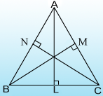
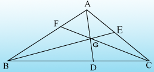

Inequalities in Triangles
Theorem:
If two sides of a triangle are unequal, the longer sides has the greater angle opposite to it.
Given
A \( \triangle{ABC} \) in which AC > AB.
To Prove
\( \angle{ABC} > \angle{ACB} \) .
Construction
mark a point D on AC such that AD = AB, Join BD.
Proof
In \( \triangle{ABD} \) , we have: AB = AD [by costruction]
\( \therefore \ \angle{ABD} = \angle{BDA} \)
But, \( \angle{BDA} \) being an exterior angle of \( \triangle{BCD} \) , we have:
\( \angle{BDA} > \angle{ACB} \)
Thus, from (i) and (iii), we get:
\( \begin{align} \angle{ABD} > \angle{ACB} \ \Rightarrow \ \angle{ABC} > \angle{ABD} > \angle{ACB} \ \Rightarrow \ \angle{ABC} > \angle{ACB} \\\\[3pt]
Hence, \ \angle{ABC} > \angle{ACB} \end{align} \) .
Theorem:
In a triangle, the greater angle has the longer side opposite to it.
Given
A \( \triangle{ABC} \) in which \( \angle{ABC} > \angle{ACB} \) .
To Prove
AC > AB
Proof
We have the following possibilities only
Case I:
If possible, let AC = AB
Then, AC = AB \( \Rightarrow \ \angle{ABC} = \angle{ACB} \) [since opp.to equal sides are equal]
This contradicts the given hypothesis that
\( \begin{align} \angle{ABC} > \angle{ACB} \\\\[3pt]
\therefore \ AC \neq AB \end{align} \) .
Case II:
If possible, let AC < AB, i.e., AB > AC.
Since the longer side has the greater angle opposite to it,
we must have, \( \angle{ACB} > \angle{ABC} \)
This contradicts the given hypothesis that \( \angle{ABC} > \angle{ACB} \)
\( \therefore \) AC cannot be less than AB.
Case III:
Thus, we are left with the only possibility, AC > AB, which must be true.
Hence, AC > AB.
Theorem:
Of all the line segments that can be drawn to a given line, from a point not lying on it, the perpendicular line segment is the shortest.
Given
A line AB and P is a point outside this line, \( PM \perp AB \) and N is any point on AB, other than M.
To Prove
PM < PN.
Proof
In \( \triangle{PMN} \) , we have, \( \angle{M} = 90^{\circ} \) .
But in a right angled triangle, each one of the angles, other than right angle, is an acute angle
\( \therefore \ \angle{N} < 90^{\circ} \ Consequently,\ \angle{M} < \angle{N} \)
\( \therefore PN > PM \) [ Since side opposite to greater angle is longer]
Hence, PM < PN.
Thus, perpendicular from P to the given line is shortest of all line segments from P to AB.
Theorem:
The sum of any two sides of a triangle is greater than its third side.
Given
A \( \triangle{ABC} \)
To Prove
-
AB + AC > BC,
-
AB + BC > AC,
-
BC + AC > AB.
Construction
Produce BA to D such that AD = AC. Join CD.
Proof
In \( \triangle{ACD} \) ,we have AC = AD
\( \therefore \ \angle{ACD} = \angle{ADC} \) [angle opposite to equal sides]
\( \begin{align} \Rightarrow \ \angle{BCA} + \angle{ACD} > \angle{ADC} \\\\[3pt]
\Rightarrow \ \angle{BCD} > \angle{BDC} \ [Since \ \angle{ADC} = \angle{BDC} ] \\\\[3pt]
\Rightarrow \ BD > BC; \ \angle{BA} + AD > BC \\\\[3pt]
\Rightarrow \ AB + AC > BC \ [Since AD = AC ] \end{align} \)
Hence, AB + AC > BC. Similarly AB + BC > AC and BC + AC > AB.
Theorem:
The difference between any two sides of a triangle is less than its third side.
Given:
A \( \triangle{ABC} \)
To Prove:
-
AC - AB < BC,
-
BC - AC < AB,
-
BC - AB < AC.
Construction:
Let AC > AB. Then, along AC, set off AD = AB. Join BD.
Proof
\( \begin{align} AB = AD \ \Rightarrow \ \angle{1} = \angle{2} \\\\[3pt]
\text{Side CD of} \ \triangle{BCD} \ \text{has been produced to A.} \\\\[3pt]
\therefore \ \angle{2} > \angle{4} \ [Since \ ext.angle \ > \ each int.opp.angle]. \\\\[3pt]
Again, \ side \ AD \ of \ \triangle{ABD} \ \text{has been produced to C}. \\\\[3pt]
\therefore \ \angle{3} > \angle{1} \ [since \ ext.angle > each int.opp.angle]. \\\\[3pt]
Consequently, \ \angle{3} > \angle{2} \ {Since \ \angle{1} = \angle{2}} \\\\[3pt]
Now, \ \angle{3} > \angle{2} \ and \ \angle{2} > \angle{4} \ \Rightarrow \ \angle{3} > \angle{4}. \\\\[3pt]
\therefore \ BC > CD \ \text{Side opposite to greater angle is longer} \\\\[3pt]
\Rightarrow \ CD < BC \\\\[3pt]
\Rightarrow \ AC - AD < BC \\\\[3pt]
\Rightarrow \ AC - AB < BC \ [since \ AD = AB] \\\\[3pt]
Hence, AC - AB < BC. \\\\[3pt]
Similarly, \ BC - AC < AB \ and \ BC - AB < AC . \end{align} \)
Solved examples
Example 1:
If \( log_{2006}(log_{2007} \ x) < 0 \) , then find the interval in which x lies.
Solution:
\( \begin{align} log_{2006}(log_{2007} \ x) < 0 \ \Rightarrow \ 0 < log_{2007} \ x < 1 \\\\[3pt]
\Rightarrow \ x \ \epsilon \ (1, \ 2007) \end{align} \)
Example 2:
If \( log_{0.1} (x - 2) > log_{0.01}(x - 2) \) , then find the interval in which "x" lies.
Solution:
\( \begin{align} log_{0.1} \ (x - 2) > log_{(0.1)^2} (x - 2) \\\\[3pt]
> \frac{1}{2} log_{0.1}(x - 2) \\\\[3pt]
2 \ log_{0.1} \ (x - 2) > log_{0.1} \ (x - 2) \\\\[3pt]
log_{0.1} \ (x - 2)^2 > log_{0.1} \ (x - 2) \Rightarrow \ (x - 2)^2 < x - 2 \\\\[3pt]
(x - 2)[(x - 2) - 1] < 0 \\\\[3pt]
(x - 2)(x - 3) < 0 \ \Rightarrow \ x \ \epsilon (2, \ 3) \end{align} \)
Example 3:
For how many positive integers n < 1000 is [ \( log_{5} \ n \) ] positive and even.
Solution:
|
\( [log_5 \ n] \)
|
Numbers |
| 0 |
1 - 4 |
| 1 |
5 - 24 |
| 2 |
25 - 124 |
| 3 |
125 - 624 |
| 4 |
625 - 3125 |
Number of integers \( \geq 625 \) < 1000 is 1000 - 624 = 375
Number of values of n = 100 + 375 = 475
Example 4:
Arrange the following in ascending order.
\( log_3 \ 108, \ log_4 \ 192, \ log_5 \ 500, \ log_6 \ 1080. \)
Solution:
Let
\( \begin{align} x = log_3 \ 108, \ y = log_4 \ 192, \ z = log_5 \ 500 \ and \ w = log_6 \ 1080 \\\\[3pt]
x = log_3 \ 108 = log_3 (3^3 \times 4) = 3 + log_3 \ 4 \\\\[3pt]
y = log_4 \ 192 = log_4 (4^3 \times 3) = 3 + log_4 \ 3 \\\\[3pt]
z = log_5 \ 500 = log_5 (5^3 \times 4) = 3 + log_5 \ 4 \\\\[3pt]
w = log_6 \ 1080 = log_6 (6^3 \times 5) = 3 + log_6 \ 5 \end{align} \)
From the above equaitons we have
\( \begin{align} 4 = 3^{x - 3} \\\\[3pt]
3 = 4^{y - 3} \\\\[3pt]
4 = 5^{x - 3} \\\\[3pt]
and \ 5 = 6^{w - 3} \ Now \ 15 = 3 \times 5 = 4^{y - 3} \times 4^{\frac{1}{4^{x - 3}}} = 4^{(y - 3) + \frac{1}{z - 3}} \\\\[3pt]
\Rightarrow \ y - 3 + \frac{1}{z - 3} < 2 < z - 3 + \frac{1}{z - 3} \ ..... \ (1) \\\\[3pt]
24 = 4 \times 6 = 5^{z - 3} \times 5^{\frac{1}{w - 3}} = 5^{(z - 3) + \frac{1}{w - 3}} \\\\[3pt]
\Rightarrow \ z - 3 + \frac{1}{w - 3} < 2 < w - 3 + \frac{1}{w - 3} ......(2) \end{align} \)
From (1), (y - 3) < (z - 3)
From (2), (y - 3) < (w - 3)
Since \ (x - 3) = log_3 \ 4, \ (x - 3) > 1 \ and \ (w - 3) = log_6 \ 5, \ (w - 3) < 1 \\[3pt]
\Rightarrow \ (y - 3) < (z - 3) < (w - 3) < (x - 3) \\[3pt]
\Rightarrow \ y < z < w < x \ \Rightarrow \ log_4 \ 192 < log_5 \ 500 < log_6 \ 1080 < log_3 \ 108
Example 5:
FInd the least of "n" in order that the sum of first n terms of the infinite series \( 1 + \frac{3}{4} + \left ( \frac{3}{4} \right )^2 + \left ( \frac{3}{4} \right )^2 + ..... \) should differ from the sum of the series by less than \( 10^{-6} \) . Given that log 2 = 0.30103 and log 3 = 0.47712.
Solution:
Let
\( \begin{align} S = 1 + \frac{3}{4} + \left ( \frac{3}{4} \right )^2 + \left ( \frac{3}{4} \right )^3 +.... \ \ = \frac{1}{1 - \frac{3}{4}} = \frac{1}{\frac{1}{4}} = 4 \\\\[3pt]
and \ S_n = 1 + \frac{3}{4} + \left ( \frac{3}{4} \right )^2 + \left ( \frac{3}{4} \right )^3 +....+ \left ( \frac{3}{4} \right )^{n - 1} = \frac{1 - \left ( \frac{3}{4} \right )^n }{1 - \frac{3}{4}} = 4 - 4 \times \left ( \frac{3}{4} \right )^n \\\\[3pt]
S - S_n < 10^{-6} \ \Rightarrow \ 4 \times \left ( \frac{3}{4} \right )^n < 10^{-6} \end{align} \)
Taking common logarithm, log 4 + n(log 3 - log 4) < - 6
\( \begin{align} \Rightarrow \ n(log \ 4 - log \ 3) > 6 + log \ 4 \\\\[3pt]
\Rightarrow \ n > \frac{6 + log \ 4}{log \ 4 - log \ 3} \ \ since (log \ 4 - log \ 3) > 0 \\\\[3pt]
\Rightarrow \ n > \frac{6 + 2 \ log \ 2}{2log \ 2 - log \ 3} = 52.84238 \end{align} \)
\( \Rightarrow \) The least value of n = 53.
Example 6:
In the figure, given below, AD bisects \( \angle{BAC}. \) Prove that:
-
AB > BD
-
AC > CD
-
AB + AC > BC
Solution:
Given, AD bisects angle BAC \( \Rightarrow \ \angle{BAD} = \angle{CAD} \)
-
In \( \triangle {ADC} \)
\( \begin{align} ext. \ \angle{ADB} = \angle{CAD} + \angle{C} \\\\[3pt]
\Rightarrow \ \angle{ADB} = \angle{BAD} + \angle{C} \ [since \ \angle{CAD} = \angle{BAD} ] \\\\[3pt]
\Rightarrow \ \angle{ADB} = \angle{BAD} \\\\[3pt]
In triangle ABD, \ \angle{ADB} > \angle{BAD} \\\\[3pt]
\Rightarrow \ AB > BD \ \ \text{[Greater angle has greater side opposite to it.]} \\\\[3pt]
\text{Hence it is proved} \end{align} \)
-
In
\( \begin{align} \triangle{ABD} \\\\[3pt]
\Rightarrow \ ext. \angle{ADC} = \angle{BAD} + \angle{B} \\\\[3pt]
\Rightarrow \ \angle{ADC} = \angle{CAD} + \angle{B} \ [SInce \ \angle{BAD} = \angle{CAD}] \\\\[3pt]
\Rightarrow \ \angle{ADC} > \angle{CAD} \\\\[3pt]
In \ \triangle{ADC}, \ \angle{ADC} > \angle{CAD} \ \Rightarrow \ AC > CD \\\\[3pt]
\tect{Hence it is proved} \end{align} \)
-
Since, AB > BD and AAC > CD
\( \therefore \
AB + AC > BD + CD \ \Rightarrow \ AB + AC > AC \)
Hence it is proved
Example 7:
In quadrilateral ABCD; AB is the shortest side and DC is the longest side. Prove that:
-
\( \angle{B} > \angle{D} \)
-
\( \angle{A} < \angle{C} \)
Solution:
Join B and D
In \( \triangle{ABD}, \ AD > AB \) [Given, AB is the shortest]
\( \therefore \ \angle{a} > \angle{c} ...... (I) \) [Angle opposite to the greater side is greater]
In \( \triangle{BCD} \ CD > BC \) [Given, CD is the longest side]
\( \therefore \angle{b} > \angle{d} ...... II \) [Angle opposite to greater side is greater]
\( \therefore \ \angle{a} + \angle{b} > \angle{c} + \angle{d} \) [Adding I and II]
\( \Rightarrow \ \angle{B} > \angle{D} \)
Hence it is proved.
Similarly, by joining A and C, it can be proved that \( \angle{A} > \angle{c} \)
Hence it is proved.
Example 8:
AD is a median of triangle ABC. Prove that: AB + AC > 2AD
Solution:
According to the given statement, the figure will be as drawn alongside in which AD is a median i.e., BD = CD.
Produce AD upto a point E such that AD = DE i.e. AE = 2AD.
Also join C and E.
Since, the sum of any two sides of a triangle is greater than the third side, therefore in triangle ACE.
AC + CE > AE
i.e., AC + CE > 2 AD .....I
In \( \triangle{ADB} \) and \( \triangle{CDE} \)
BD = CD [Given]
AD = DE [By construction]
and, \( \angle{ADB} = \angle{CDE} \) [Vertically opposite angles]
\( \triangle{ADB} \cong \triangle{CDE} \) [By S.A.S.]
\( \Rightarrow \) AB = CE [C.P.C.T.C]
Substituting CE = AB in equation (I), we get :
AC + AB > 2AD
i.e. AB + AC > 2 AD
Hence it is proved
As proved above, if AD is a median of the triangle ABC ;
AB + AC > 2AD
Similarly, if BE and CF are also the medias:
AB + BC > 2BE
and, BC + AC > 2CF
Adding these results, we get:
2AB + 2BC + 2AC > 2AD + 2BE + 2CF
\Rightarrow AB + BC + AC > AD + BE + CF
i.e., the perimeter of a triangle is greater than the sum of the lengths of its medians.
Example 9:
P is any point in the interior of a triangle ABC.
Prove that : PA + PB < AC + BC
Solution:
According to the given statement, the figure will be as shown below.
Produce, BP to meet AC at point M.
Since, the sum of any two sides of a triangle is greater than its third side.
\( In \ \triangle{BCM}, \ BC + CM > BM ..... I \)
and,in \( \triangle{APM} \) , AM + PM > AP.......II
Adding I and II, we get :
BC + CM + AM + PM > BM + AP
\Rightarrow BC + (CM + AM) > BM - PM + AP
\Rightarrow BC + AC > PB + PA
i.e. PB + PA < BC + AC
Hence it is proved
Example 10:
Show that the sum of three altitudes of a triangle is less than the sum of the three sides of the triangle.
Solution:

Let AL, BM, CN be the three altitudes of \( \triangle{ABC} \) . We know that, of all line segments drawn from a point outside a line to the line, the perpendicular is the shortest.
\( \therefore \) AL < AB, BM < BC and CN < AC
\( \therefore \) AL + BM + CN < AB + BC + AC.
Example 11:
Prove that the perimeter of a triangle is greater than the sum of its three medians.
Solution:

Let AD, BE and CF be the three medians of a A ABC. We know that the sum of any two sides of a triangle is greater than twice the median drawn to the third side.
\( \therefore \) AB + AC > 2AD
AB + BC > 2AE and BC + AC > 2CF.
Adding, we get : 2 (AB + BC + AC) > 2 (AD + BE + CF)
\( \therefore \) (AB + BC + AC) > (AD + BE + CF)
Example 12:
In the given figure, PQ > PR. QS and RS are the bisectors of \( \angle{Q} \) and \( \angle{R} \) respectively. Prove that SQ > SR.
Solution:
In \( \triangle{PQR} \)
PQ > PR (given) [Angle opposite to greater side of a \( \triangle \) is greater]
\( \begin{align} \Rightarrow \frac{1}{2} \angle{PRQ} > \frac{1}{2} \angle{PQR} \\\\[3pt]
\Rightarrow \ \angle{SRQ} > \angle{SQR} \end{align} \)
\( \Rightarrow \) SQ > SR ( side opposite to greater angle is greater)
Example 13:
AD is the bisector of \( \angle{A} \) of \( \triangle{ABC} \) , D lies on BC. show that AB > BD and AC > CD.
Solution:
In \( \triangle{ABC} \)
AD is bisector of \( \angle{A} \)
\( \therefore \ \angle{1} = \angle{2} \)
But in \( \triangle{ABD} \ ext \ \angle{ADC} > \angle{1} \) [exterior \( \angle \) of a \( \triangle \) is greater than each of interior opposite angles].
i.e.,
\( \begin{align} \angle{3} > \angle{1} \\\\[3pt]
\therefore \ \angle{3} > \angle{2} \ [from \ (i)] \\\\[3pt]
\therefore \ from \ \triangle{ADC} \end{align} \)
AC > AD [since side opposite to greater angle is greater]
Also \( \angle{4} > \angle{2} \) [In ADC, \( \angle{4} \) is exterior angle]
\( \angle{4} > \angle{1} \)
AB > BD [since side opposite to greater angle is greater]
Example 14:
Solve the inequation \( \sqrt{3x - 8} < -2 \) .
Solution:
Since \( \sqrt{3x - 8} \geq 0 \) for any real x, there is no real number "x" such that \( \sqrt{3x - 8} > -2 \)
\( \begin{align} \sqrt{3x - 8} \geq 0 \ \\\\[3pt]
\therefore \ Solution \ set = \Phi \end{align} \)
Example 15:
Solve \( x^2 - 6x + 8 > 0 \)
Solution:
\( \begin{align} x^2 - 6x + 8 > 0 \\\\[3pt]
\Leftrightarrow \ x^2 - 6x > - 8 \\\\[3pt]
i.e., \ x^2 - 6x + 9 > -8 + 9 \end{align} \)
9 is added on both sides to make L.H.S of (i) a perfect square.
\( \begin{align} \therefore \ (x - 3)^2 > 1 \\\\[3pt]
i.e., \ |(x - 3)| > 1. \end{align} \)
That is the absolute value of (x - 3) should be greater than 1. In order to have this (x - 3) should not lie between - 1 and 1. Therefore x should not lie between 2 and 4.
The set of solutions \( x^2 - 6x + 8 > 0 \) is { x : x > 2 or x > 4}
Alternatively the given inequation can be solved as follows:
\( \begin{align} x^2 - 6x + 8 > 0 \\\\[3pt]
i.e., \ (x - 2)(x - 4) > 0 \\\\[3pt]
\Leftrightarrow \ (x - 2) < 0 \ and \ (x - 4) < 0 \ (or) \ (x - 2) > 0 \ and \ (x - 4) > 0 \\\\[3pt]
\Leftrightarrow \ x < 2 \ and \ x < 4 \ (or) \ x > 2 \ and \ x > 4 \\\\[3pt]
\Leftrightarrow \ x < 2 \ (or) \ x > 4 \\\\[3pt]
\therefore \ \text{The set of solution of } \ x^2 - 6x + 8 > 0 \ is \ \{x : x < 2 \ or \ x > 4 \} \end{align} \)